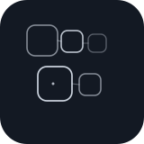
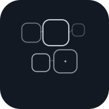

Broken rings
Variant A
rings-a
Second pass around the symbols Jannes liked most: broken rings, contour bands, Lissajous loops, nested cells, and spiral attractors. Each family now has two more deliberate variants so we can identify what feels best before placing anything on the homepage.
← back to v1 sheet
